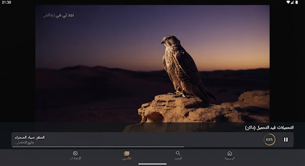

التحميلات
smartphone
سعة تخزين الجهاز
3.6 جيجابايت مستخدم من 128 جيجابايت
نجد تي في:
3.6 ج.ب
أخرى:
88.6 ج.ب
المتاح:
35.8 ج.ب
جاري التنزيل حالياً (2)
download
4.2 م.ب/ث
أصداء طويق
الموسم 1 · الحلقة 4
420 ميجابايت من 650 ميجابايت

error_outline
صقر الجزيرة
فيلم وثائقي
warning
تعذر إكمال التحميل. حاول مجددًا
توقف عند 1.2 جيجابايت